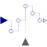

AssignClockVectorizedAssign a clock to a clocked Real signal vector |

|
Information
This information is part of the Modelica Standard Library maintained by the Modelica Association.
This block assigns a clock to the Real vector input signal u and provides u as vector output signal y.
Example
The following
example
shows two discrete counters. In order to execute the counters with a sample period of 20ms an AssignClockVectorized block is used. Due to clock inference all equations within the blocks are deduced to be active at the clock ticks given by the periodicClock block.
 |
 |
|
| model | simulation result |
At every clock tick (that is every 20ms) the output of the unitDelay1 block is incremented by one and that of the unitDelay2 block is incremented by two. The vector size of the input and output is provided by parameter n=2 which is also shown in the icon of block assignClock1.
Parameters (1)
| n |
Value: 1 Type: Integer Description: Size of input signal vector u (= size of output signal vector y) |
|---|
Connectors (3)
| u |
Type: RealInput[n] Description: Connector of clocked, Real input signal |
|
|---|---|---|
| y |
Type: RealOutput[n] Description: Connector of clocked, Real output signal |
|
| clock |
Type: ClockInput |
Used in Examples (1)
|
Modelica.Clocked.Examples.Elementary.RealSignals Example of a AssignClockVectorized block for Real signals |